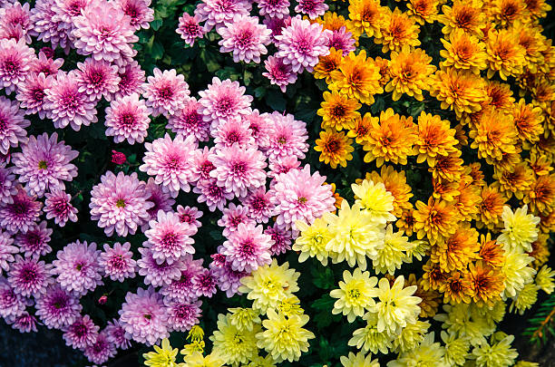
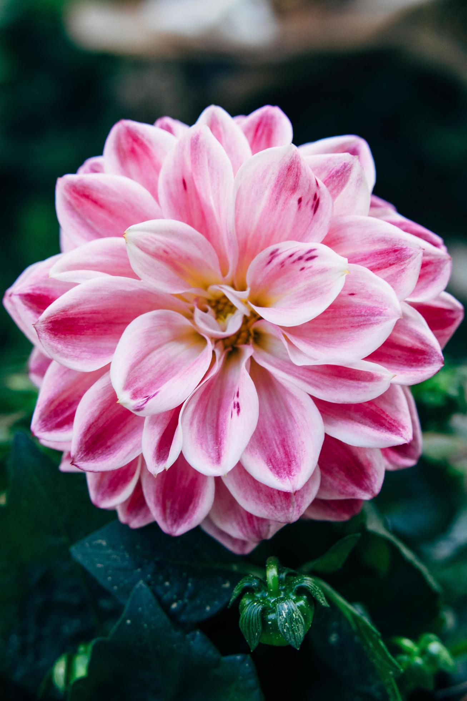

Exposição de lindas flores🌷
Os crisântemos são plantas herbáceas, perenes, cultivadas como plantas anuais, com folhas simples de margens inteiras a fendidas e opostas cruzadas. A inflorescência é denominada capítulo, constituída, em geral, por dois tipos de flores: as liguladas e as tubulosas

As dálias têm porte ereto e crescimento rápido, sendo geralmente consideradas de difícil cultivo. As dálias precisam de solo fértil, úmido, mas bem drenado, e de sol pleno a meia-sombra.
